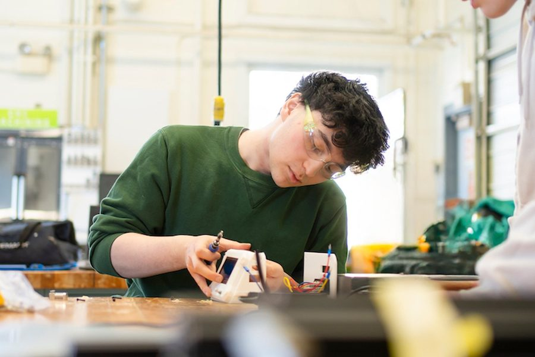
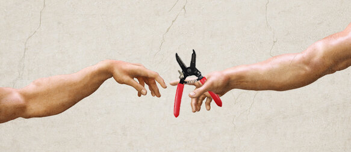

ECE @ Northeastern University
Electrical and Computer Engineering student at Northeastern University with experience in embedded systems, hardware design, and applied research. Interested in assistive technology, soft robotics, and the intersection of hardware and machine learning.

Background
I’m an Electrical and Computer Engineering student at Northeastern University, with a strong interest in hardware engineering, product design, and the intersection of technology and creativity. My academic background has introduced me to the exciting world of circuits, electronics, and power systems, and I’m driven to keep learning through both coursework and hands-on projects.
Outside the lab, I explore my creative side through digital art, a passion that helps me balance analytical thinking with visual expression. I believe engineering and art aren’t opposites; they complement each other. Whether I’m designing a circuit or sketching out ideas, I aim to bring thoughtful design and technical precision together in everything I create.
I’m especially passionate about entrepreneurship, building useful things, and contributing to projects that push ideas from prototype to reality.
Toolkit

Selected work
Led a 7-person interdisciplinary team to design a handheld Braille reader for visually impaired users. The device converts text into Braille output via a rack-and-pinon pin actuation system driven by gearbox motors, targeting a major accessibility gap where existing solutions cost thousands of dollars and aren't portable. Partnered with Easterseals for expert feedback.
A multi-station interactive museum exhibit designed to teach children ages 7–11 how stress affects the brain and how to manage it. The centerpiece is a 3D-printed clear-filament brain lit by RGB LEDs that shifts from red to blue as kids engage with three stations: a laser-cut soundboard, a pressure-sensitive drawing pad, and a box-breathing LED strip. A servo-driven smiley face reacts in real time. Python (Pico) and MATLAB coordinate all components over serial. Demoed publicly at the Roxbury Showcase.
An EEG-to-video pipeline that converts raw brainwave signals into generated video using Stable Video Diffusion. Built training datasets, designed the full-stack architecture, and visualized brain activity in real time at the BR41N.io hackathon.
A Raspberry Pi-based access control system with Google Sheets logging. Tracks entry events and supports remote unlocking via a spreadsheet checkbox — no app needed.
An automated can crusher with a 24V wormgear motor, four-bar mechanism, and real-time LCD feedback. Detects can presence, tracks crushing count, and includes an emergency stop. Built for campus sustainability.
Scrapes Google Form music submissions and auto-generates a Spotify playlist. Deployed at campus-wide events at Union College — turned passive data entry into a live shared queue.
Uses the Spotify API to pull album artwork and assemble it into a photomosaic — a personal artifact generated from your listening history.
Parses .docx files, identifies overused words by frequency, and suggests synonyms via the Thesaurus API. A writing tool built to address a real workflow need.
Academic & Industry
Developing a user-interfacing tool to acquire and utilize multimodal sensor data for assistive technology research, with a focus on guiding elderly users through physical interaction. The proposed system is a wireless handheld device integrating a contact microphone, a piezoresistive touch display, and an accelerometer to predict and interpret hand movement in real time. Future directions include soft robotics integration, VR coupling, and camera-based motion tracking.
Contributed to the development of AR/AI glasses in the Institute for the Wireless Internet of Things at Northeastern. Integrated a 5G modem IC onto a PCB to support high-speed wireless data communication. Researched component manufacturers, procured PCBs for testing, and installed surface-mount components onto prototypes using a reflow oven.
Led research on dielectric elastomer actuators (DEA) for soft robotics applications, focusing on voltage-induced contraction behavior. Created detailed circuit diagrams to facilitate future reference and testing protocols. Integrated microcontroller programming to support machine learning research related to DEA functionality and response characterization.